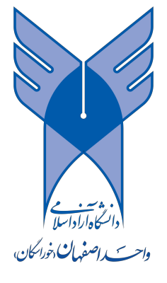
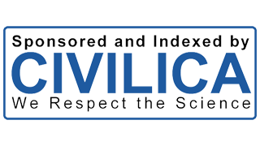
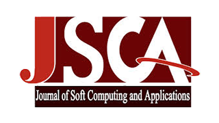
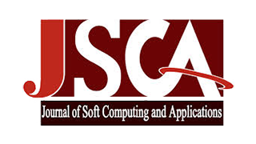
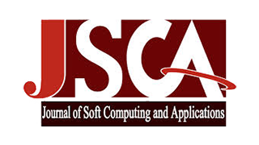

اولیـن همایـش
ملـی
فنـاوری اطلاعـات،
ارتباطـات
و
محاسبات نـرم
دانشگاه آزاد اسلامی
واحــد اصفهــان (خوراسگان)
۲۳ و ۲۴ اردیبهشت ماه ۱۳۹۵

اولین کنفرانس ملی فن آوری اطلاعات، ارتباطات و محاسبات نرم با هدف رشد و توسعه دانش در شاخه های علوم و مهندسی کامپیوتر و فناوری اطلاعات و ارتباطات در اردیبهشت ماه ۱۳۹۵ در محل دانشگاه آزاد اسلامی واحد اصفهان برگزار می گردد. کمیته برگزار کننده همایش از تمامی اساتید، دانشجویان، محققین، و مهندسین دعوت میتماید تا با ارسال مقاله و شرکت در کنفرانس با تبادل یافته های علمی، پژوهشی، و کاربردی خود موجب غنیتر و مفیدتر شدن کنفرانس در راستای اهدافش باشند.
شورای سیاستگذاری همایش
- دکتر احمدعلی فروغی ابری رئیس شورای سیاستگذاری
- دکتر پیام نجفی دبیر شورای سیاستگذاری
- دکتر محمدرضا سلطان آقایی رئیس همایش
- دکتر فرساد زمانی بروجنی دبیر علمی همایش
کمیته علمی همایش
- دکتر امیرحسن منجمی عضو هیئت علمی دانشگاه اصفهان
- دکتر ناصر نعمتبخش عضو هیئت علمی دانشگاه اصفهان
- دکتر محمدرضا خیام باشی عضو هیئت علمی دانشگاه اصفهان
- دکتر نرجس حبیبی عضو هیئت علمی دانشگاه آزاد اسلامی اصفهان
- دکتر زهره فتوحی عضو هیئت علمی دانشگاه آزاد اسلامی اصفهان
- دکتر زهرا حسینی پزوه عضو هیئت علمی دانشگاه آزاد اسلامی اصفهان
- دکتر محمد حسین ندیمی رئیس دانشکده کامپیوتر دانشگاه آزاد نجف آباد
- دکتر فرامرز صافی عضو هیئت علمی دانشگاه آزاد نجف آباد
- دکتر محمد نادری دهکردی عضو هیئت علمی دانشگاه آزاد نجف آباد
- دکتر بهرنگ برکتین عضو هیئت علمی دانشگاه آزاد نجف آباد
- دکتر اکبر نبی الهی عضو هیئت علمی دانشگاه آزاد نجف آباد
- دکتر حمید رستگاری عضو هیئت علمی دانشگاه آزاد نجف آباد
- دکتر سید حبیب سیف زاده عضو هیئت علمی دانشگاه آزاد نجف آباد
- دکتر کیوان محبی عضو هیئت علمی دانشگاه آزاد مبارکه
- دکتر تقی جاودانی گندمانی عضو هیئت علمی دانشگاه آزاد بروجن
- دکترمهدی اسماعیلی عضو هیئت علمی دانشگاه آزاد کاشان
- دکتر حسن ابراهیم پور کومله عضو هیئت علمی دانشگاه کاشان
- دکتر رضا قائمی عضو هیئت علمی دانشگاه آزاد قوچان
- دکتر مهرداد جلالی عضو هیئت علمی دانشگاه آزاد مشهد
- دکتر مجید خلیلیان عضو هیئت علمی دانشگاه آزاد کرج
- دکتر علیرضا نوروزی عضو هیئت علمی دانشگاه آزاد اسلامی شهر مجلسی
کمیته اجرایی همایش
- مهندس علی سلیمانی عضو گروه آموزشی کامپیوتر دانشگاه آزاد اصفهان
- مهندس مینا کیمیایی عضو گروه آموزشی کامپیوتر دانشگاه آزاد اصفهان
- مهندس ماندانا پنجهپور عضو گروه آموزشی کامپیوتر دانشگاه آزاد اصفهان
- مهندس شیدا بیژنی عضو گروه آموزشی کامپیوتر دانشگاه آزاد اصفهان
- مهندس راضیه عسگرنژاد عضو گروه آموزشی کامپیوتر دانشگاه آزاد اصفهان
- مهندس پروین احمدی عضو گروه آموزشی کامپیوتر دانشگاه آزاد اصفهان
- مهندس سید مهرزاد موسوی پور
- مهندس امید گلپرور
- مهندس مریم محمدی سرپیری


 

